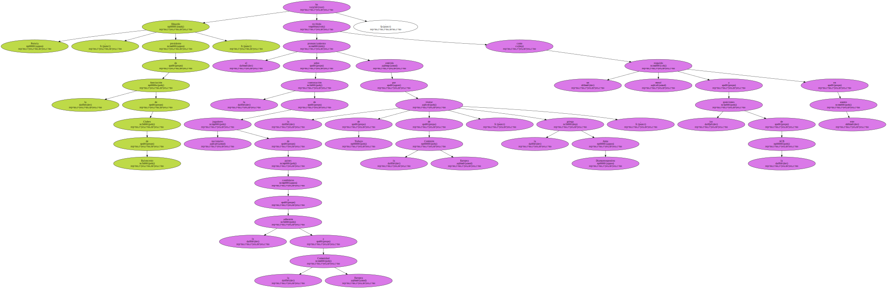
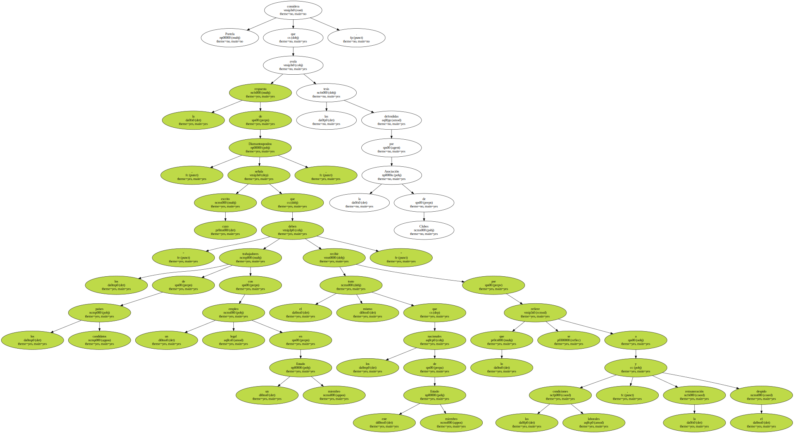
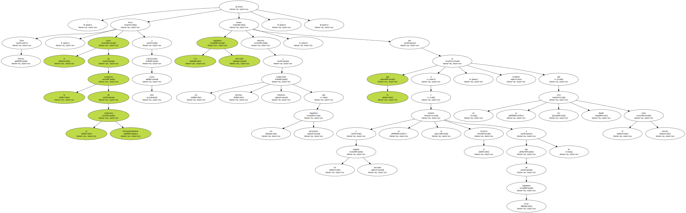
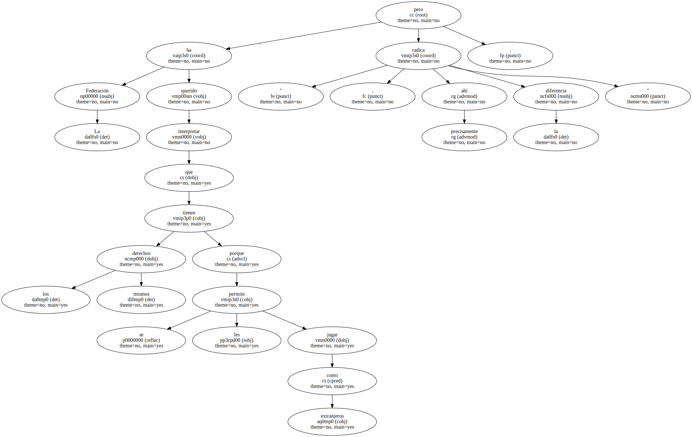
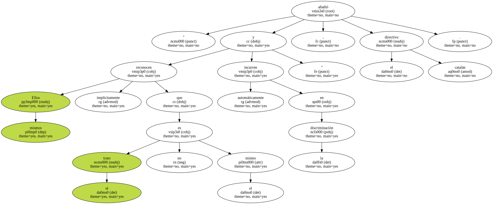
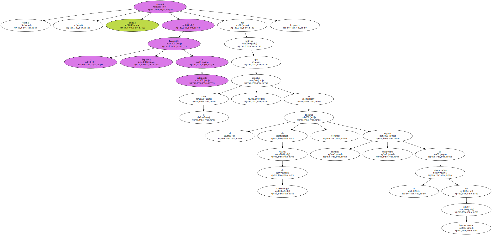
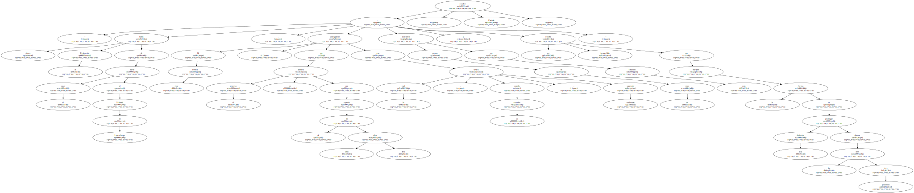

Eduardo Portela , presidente de la Asociación de Clubes de Baloncesto , ha recibido el pronunciamiento sobre la contratación de jugadores nacionales de países candidatos a la adhesión a la Comunidad Europea emitido por la titular de Trabajo de la Comisión Europea , la griega Anna Diamantoupoulou , como un respaldo moral a las posiciones de la ACB en este asunto.
Portela considera que la respuesta de Diamantoupoulou , cuyo escrito señala que " los trabajadores de los países candidatos con un empleo legal en un Estado miembro deben recibir el mismo trato que los nacionales de este Estado miembro por lo que se refiere a las condiciones laborales , la remuneración y el despido " , avala las tesis defendidas por la Asociación de Clubes.
" El pronunciamiento de la Comisión Europea ha sido muy importante , sobre todo por lo que supone de legitimación moral . Durante todo este proceso , hemos pasado por situaciones muy duras pero en ningún momento hemos dudado de que nos asistía la razón . La interpretación de la Comisión Europea ha coincidido totalmente con las tesis de nuestros estudios jurídicos " , indicó el presidente de la ACB.

" Para Portela , el texto de la respuesta de la comisaria Diamantoupoulou lleva a conclusiones muy claras . Los jugadores afectados tienen derecho a las mismas condiciones laborales que los jugadores nacionales , por lo que si a un jugador nacional se le tramita la licencia y a uno de estos jugadores no , es evidente que no se les está dando el mismo trato ".
" La Federación ha querido interpretar que tienen los mismos derechos porque se les permite jugar como extranjeros , pero precisamente ahí radica la diferencia ".
" Ellos mismos reconocen implícitamente que el trato no es el mismo y automáticamente incurren en la discriminación " , añadió el directivo catalán.
Además , Portela censuró a la Federación Española de Baloncesto por solicitar que el caso se resuelva en el Tribunal de Justicia de Luxemburgo , máximo órgano competente en la interpretación de tratados internacionales.
" Ahora la Federación habla de llevar el caso al Tribunal de Luxemburgo . De esta forma , conseguirían que el proceso se dilatara por espacio de de unos tres años con lo cual , cuando se resuelva , estará totalmente superado . Llevamos menos de un mes en esta situación y me resulta inconcebible que busquen la forma de prolongar esta dinámica durante los próximos tres años " , recalcó Portela.
